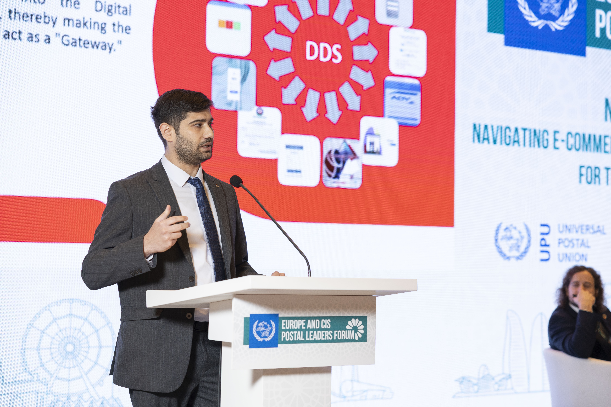

Emil Ahmadzada

Contact
- M.Mushviq 501, Baku, Azerbaijan AZ1037
- Mob: +99450 424-72-24
- E-mail: emilahmadzada@yahoo.de
-
Linkedin
Education
-
Baku State University
Applied Mathematic and Economic Cybernetics
2007 - 2012
Grade: B.Sc.
-
Kiel University
Master of Buisness Adminstration
2012 - 2015
Grade: M.Sc.
Work experience
-
Innovation and Digital Development Agency
Program Manager - Dec 2024 - Present (6 mos)
IT Project Manager - Jul 2023 - Present (1 yr 11 mos)
-
SOCAR Downstream
Senior Enterprise Resources Planning Analyst - May 2023 - Jul 2023 (3
mos)
-
Azersun Holding
Senior Information Technology Business Analyst - Apr 2022 - May 2023 (1
yr 2 mos)
Human Resources Specialist - Oct 2011 - Oct 2012 (1 yr 1 mo)
-
Caspian Innovation Center LLC (SOCAR IBM JV)
Business Analyst - May 2020 - Apr 2022 (2 yrs)
-
Ziraat Bank Azerbaijan OJSC
Information Technology Business Analyst - Dec 2019 - May 2020 (6 mos)
-
AHK Azerbaijan
Head of Business Services Department - Mar 2019 - Sep 2019 (7 mos)
Business Analyst - Oct 2017 - Mar 2019 (1 yr 6 mos)
-
Elginkan Holding, E.C.A Germany GmbH
Business Specialist - Apr 2017 - Sep 2017 (6 mos)
Cologne, Germany
Additional Information
Languages
- Azerbaijani (Native)
- German (Fluent)
- English (Upper-Intermediate)
- Russian (Upper-Intermediate)
- Turkish (Fluent)
Technical Skills
- Microsoft Office Suite: Excel (Power Query, VBA, Macros)
- ERP Systems: 1C 8.3, SAP BW/BI, Colvir, Logo, Büro+
-
Databases: ER-Modelling, SQL, MySQL, MongoDB, Microsoft SQL Server
-
Programming: HTML, CSS, JavaScript, ReactJS, ReduxToolKit, NodeJS,
ExpressJS, Python, Django
Activities & Awards
-
Digital Document Bridge - E-gov application that - Program Manager
-
Lecturer and project manager from CIC at ADA Employability Week (2021)
- EU - Azerbaijan Business Forum - Program Manager (2019)
-
Azerbaijani Day Event Organizing at University Kiel - Project Manager
(2013)
- TestDaf, German proficiency exam, TestDaf 2x5, 2x4 (2011)
References
-
Tobias Baumann: (+99450) 273 68 98, Executive Director of German
- Azerbaijani Chamber of Commerce
-
Elchin Azimli: (+99450) 210 42 52, Director of Education and
Development Department of Azersun Holding
-
Sadiq Akhundov: (+99450) 265 94 42, IT Director of ZiraatBank
Azerbaijan
-
Orkhan Guliyev: (+99450) 212 66 87, COO Caspian Innovation Center